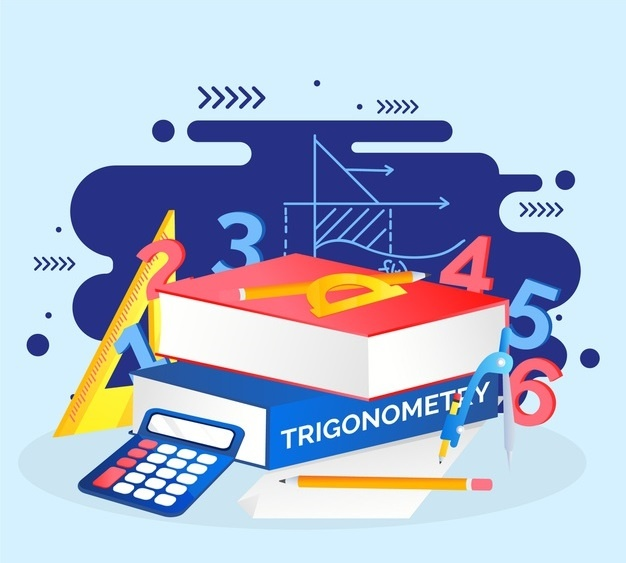
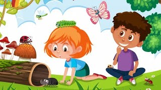
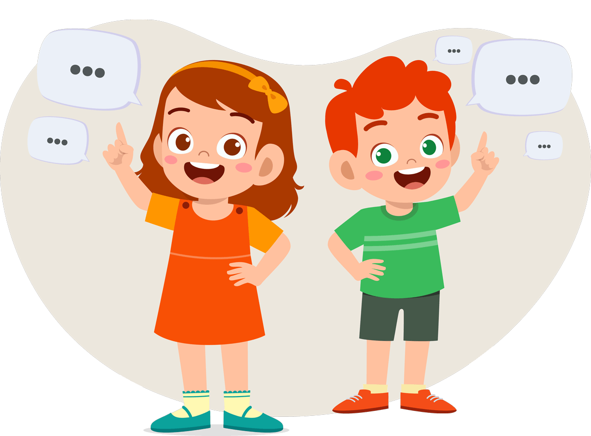
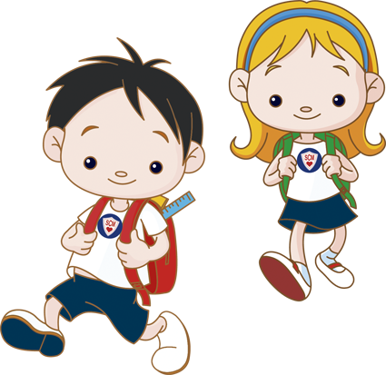

Наші курси
-
Загальний курс "Всебічний курс по підготовці до школи"

Цей курс включає всі основні напрямки, що потрібно розглянути, щоб дитина була готова до школи
Теми уроків, що вивчатимуться на нашому курсі "Всебічний курс по підготовці до школи" № Назва теми Короткий опис Матеріали Завдання Кількість уроків Математика 1 Лічба від 1 до 10 Ознайомлення з числами, вчимо рахувати предмети Картки з цифрами, іграшки, кубики Полічити іграшки вдома, знайти число на картках 3 2 Додавання та віднімання Початкові арифметичні дії Олівці, лічильні палички Розв’язати приклади з малюнками 4 3 Геометричні фігури Коло, квадрат, трикутник та інші фігури Аплікації, кольоровий папір Знайти фігури серед предметів у кімнаті 2 4 Порівняння предметів («більше/менше», «довший/коротший») Вчимося розрізняти більше/менше, довший/коротший Іграшки різного розміру Покласти іграшки за розміром у рядок 2 Мова 1 Абетка (літери) Знайомство з літерами Алфавітні картки, зошит Вивчити 2–3 літери на тиждень 5 2 Складання складів Поєднання літер у склади Картки з літерами Скласти слово з 2–3 складів 4 3 Читання простих слів Перші кроки у читанні Книжки для дошкільнят Прочитати 3 простих слова 5 4 Розвиток мовлення (речення, казки) Складання речень, слухання казок Книжки, аудіоказки Розказати коротеньку історію 3 Природа 1 Пори року Ознаки кожної пори року Ілюстрації, малюнки Намалювати улюблену пору року 2 2 Тварини Домашні та дикі тварини Картки із зображеннями Назвати 5 улюблених тварин 3 3 Рослини Квіти, дерева, овочі Малюнки, гербарій Посадити квасолю в баночці 2 4 Довкілля Чистота, турбота про природу Картки, плакати Пояснити, чому треба прибирати сміття 1 Творчість 1 Малювання Зображення простих форм і предметів Фарби, альбом Намалювати свій дім 3 2 Ліплення Ліплення з пластиліну Пластилін Зліпити улюблену тварину 3 3 Музика та ритм Ознайомлення з ритмом, спів Дитячі пісеньки, музичні іграшки Постукати ритм долоньками 3 Логіка та розвиток мислення 1 Пазли Складання цілого з частин Пазли з картинками Зібрати пазл на 6–10 деталей 2 2 Логічні ігри Пошук відповідностей, сортування Картки, конструктор З’єднати предмет і його тінь 4 3 Пам’ять і увага Ігри на запам’ятовування Картки «Memory» Знайти однакові пари 4 Разом 55 уроків -
Міні-курс "Математична мандрівка"
Цей курс охоплює базове та поглиблене вивчення математики.
Теми уроків до курсу "Математична мандрівка" № Назва теми Короткий опис Матеріали Завдання Кількість уроків 1 Знайомство з числами від 1 до 5 Діти вчаться рахувати предмети навколо та співвідносити цифри з кількістю. Картки з цифрами, іграшки, малюнки. Порахувати яблука, з’єднати цифру з групою предметів. 1 2 Числа від 6 до 10 Розширення знань про числа та тренування лічби. Кубики, роздаткові картки. Викласти задану кількість предметів, показати цифру. 1 3 Сусіди чисел Діти дізнаються, що у кожного числа є "сусіди". Картки з цифрами. Знайти, яке число йде після і яке перед. 1 4 Порівняння предметів Формується розуміння понять "більше", "менше", "дорівнює". Картинки, палички. Скласти групи та визначити, де предметів більше. 1 5 Геометричні фігури Знайомство з основними формами. Набір геометричних фігур. Знайти коло, квадрат, трикутник серед предметів. 1 6 Орієнтація у просторі Вивчення понять "ліворуч/праворуч", "вгору/вниз". Картинки, іграшки. Покласти іграшку "праворуч від кубика". 1 7 Логічні задачі Тренування логіки через вправи "знайди зайве". Картки з малюнками. Вибрати предмет, який не підходить. 1 8 Мандрівка до країни чисел Підсумкова гра для закріплення знань. Настільна гра, картки. Пройти квест, виконуючи математичні завдання. 1 -
Міні-курс "Світ навколо мене"
Цей курс охоплює базове вивчення складових довкілля.
Теми уроків до курсу "Світ навколо мене" № Назва теми Короткий опис Матеріали Завдання Кількість уроків 1 Пори року Знайомство з весною, літом, осінню та зимою. Картки з ілюстраціями, настінний календар. Розкласти малюнки за сезонами. 1 2 Погода Діти вивчають сонце, дощ, вітер, сніг. Малюнки погоди, пісочний годинник. Намалювати погоду за вікном. 1 3 Тварини Ознайомлення з дикими та свійськими тваринами. Картки із зображеннями тварин. Розділити тварин на «домашніх» і «диких». 1 4 Рослини Вивчення дерев, квітів, овочів. Гербарій, фото рослин. Визначити, які рослини ростуть у саду, які в полі. 1 5 Довкілля Формування екологічних звичок. Малюнки смітників, предмети для сортування. Розподілити сміття за контейнерами. 1 6 Підсумкова вікторина Узагальнення знань у формі гри. Презентація, картки. Відповісти на питання «Що росте восени? Хто живе в лісі?» 1 -
Міні-курс "Мовленнєвий розвиток"
Цей курс охоплює базове вивчення букв,складів, навчання принципів читання.
Теми уроків до курсу "Мовленнєвий розвиток" № Назва теми Короткий опис Матеріали Завдання Кількість уроків 1 Абетка Знайомство з літерами українського алфавіту. Картки з літерами, кубики. Назвати першу букву свого імені. 1 2 Складання складів Об’єднання літер у склади. Магнітна абетка. Скласти «ма», «ра», «со». 1 3 Читання слів Перші кроки в читанні коротких слів. Картки зі словами. Прочитати слова «мама», «ліс». 1 4 Речення Знайомство з простими реченнями. Малюнки + підписи. Скласти речення за картинкою. 1 5 Казки Розвиток слухового сприйняття. Аудіоказки, книги з малюнками. Прослухати казку та відповісти на запитання. 1 6 Підсумкове заняття Узагальнення знань. Настільна гра «Алфавіт». Пройти маршрут, читаючи слова. 1 -
Міні-курс "Я готуюсь до школи"
Цей курс охоплює підготовку до режиму навчання, розвиток концентрації та пам'яті.
Теми уроків до курсу "Я готуюсь до школи" № Назва теми Короткий опис Матеріали Завдання Кількість уроків 1 Правильне сидіння Навчання сидіти за партою. Стілець, парта, картинка з правильною позою. Посидіти 1 хв у правильній позі. 1 2 Розвиток дрібної моторики Підготовка руки до письма. Олівці, зошит із лінійками. Обвести малюнки по контуру. 1 3 Увага та пам’ять Ігри на тренування уваги. Картки «знайди відмінності». Знайти 5 відмінностей у малюнках. 1 4 Шкільний розпорядок Знайомство з режимом дня. Розклад дня, картинки. Розставити картинки у правильному порядку. 1 5 Перша шкільна гра Узагальнення знань. Настільна гра «Першокласник». Пройти маршрут гри, виконуючи завдання. 1